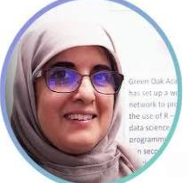
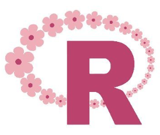
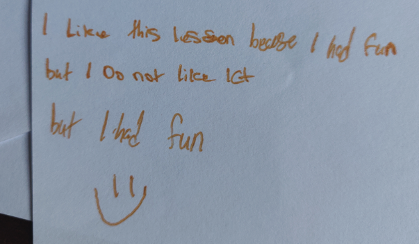
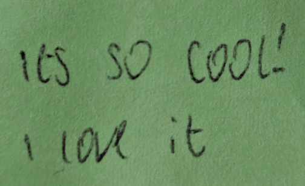
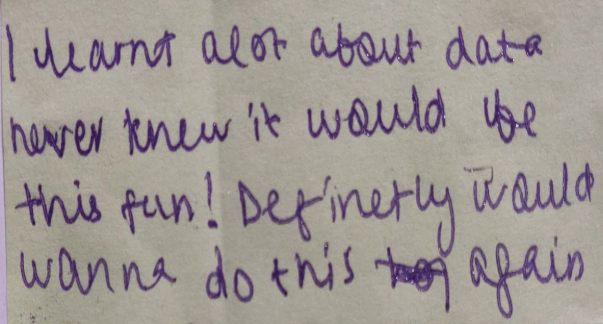
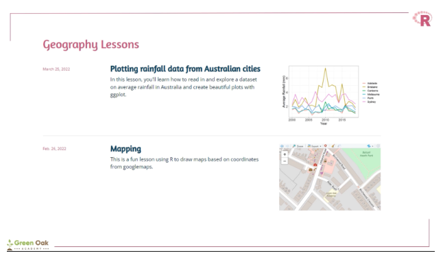
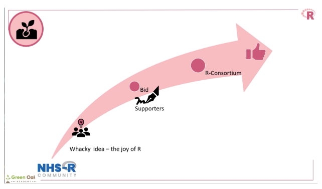

The R Consortium recently interviewed Dr. Raiza Ghani, Professor Mohamed Amin, and R teacher Anisa Nawaz. Dr. Razia Ghani and her team at Green Oak Academy are leading a two-year project to establish the R-Girls-School (R-GS) network, addressing the underrepresentation of women, particularly from deprived and ethnically diverse backgrounds, in data science. The initiative aims to integrate data science into the UK national curriculum, which is used by schools globally. The project focuses on developing 10 R-based lesson plans in the first year, with the second year dedicated to networking and dissemination. This includes a dedicated website with extensive online resources. Supported by key figures and organizations in the R community, the project aims to provide sustainable, impactful education in data science for girls worldwide. This project was funded by the R Consortium.
What inspired you to initiate the R-Girls-Schools (R-GS) Network project?
Dr. Ghani: Initially, we thought we would integrate programming into our school curriculum. Using programming to explain mathematical concepts would help the girls visualize and understand them better. Gradually, this idea expanded into a larger vision, where we aimed to create a network of schools using the lessons we developed. Part of the funding requirements was to open up our lessons beyond just our school.
Additionally, being an all-girls school made this initiative particularly appealing to us. We recognized that our students might not have had this exposure otherwise and wanted to provide them with this valuable opportunity. Professor Mohamed worked with us, making it an ideal situation. It was an opportunity that came our way, and we seized it enthusiastically.

Logo design: Anisa Nawaz
Professor Mohamed: First, we observed that girls in our school generally didn’t take to computer science; they were often turned off by the subject. Second, Dr. Ghani, with a background in mathematics and statistics, understands the power of software in these fields, both in the classroom and in industry.
I had the pleasure of helping set up the R community for the National Health Service (https://nhsrcommunity.com/) in the UK, which was a very positive experience. One summer, outside of school, Dr. Ghani and I discussed bringing the joy of R to the classroom. This idea seemed readily achievable because of Dr. Ghani’s background in mathematics and statistics. We then considered how to implement this and became aware of a funding opportunity from the R Consortium. As part of that process, we actively sought support from various individuals who replied positively.
I should emphasize that our goal was not to teach computer programming. Dr. Ghani made it clear from the beginning that we see software as a tool to teach other subjects, not just programming. Our aim was to use R as an applied tool to help the girls in various subjects involving data collection, analysis, and visualization.
In summary, we wanted to see if teenage girls could experience the joy of using R. The support from the R consortium allowed us to pursue this idea.
Anisa: My first experience with R was a request to design a logo. It was exciting to do and it’s great to see the logo has now been adopted. However when I started coding in R, I initially thought it would be very complicated, involving writing a lot of formulas and complex code. However, I’ve learned that coding is actually quite easy. Most resources can be found online, and often it’s just a matter of tweaking things, like replacing numbers or colors. The girls also noticed that while it seemed like a lot of text and difficult concepts at first, they began to understand what everything meant over time, making it much easier for them.
One challenge is that only a few girls are entering fields like data science because they need to understand how it works or what it looks like to work in that field. This lack of understanding makes it seem more complicated and intimidating. But now that they see how it works, I hope that in the future, more girls will be interested in these areas.
Could you explain the significance of using R specifically, as opposed to other programming languages, in the context of this project?
Professor Mohamed: We were aware that computer science didn’t appeal to the girls, so we avoided using that label and the associated languages. Instead, we opted for R because of its strong worldwide community, numerous user groups, and abundant free resources. The R-Ladies group is also a significant part of that community, which helps build confidence for both staff and students in their journey with R.
This doesn’t mean we’re against other languages such as Python; we just chose to focus our energy on R. You can go far in your data science career with R, especially if your primary goal is to analyze existing data, look for insights, and create reports and graphics, rather than building data science products.
Dr. Ghani used SAS a long time ago when there were fewer choices, but SAS is not something we would consider bringing to the school. It’s a complex programming language that takes many years to master. These were some of the considerations we had when choosing R over other options. For us, it was a clear decision.
Dr. Ghani: From the school finance perspective, choosing R was a no-brainer. It’s freely available, which makes a huge difference compared to having to subscribe to something annually. We did have some annual subscriptions for other things, but R itself is free, and we were already using it in the school. We use R to produce graphs that show student progress and to print out timetables. This project was just a natural extension of what we were already doing.
Can you elaborate on the specific challenges girls from disadvantaged, ethnically diverse backgrounds face in entering the field of data science?
Dr. Ghani: I think the key issue here is deprivation, particularly among ethnic minority backgrounds. The girls’ backgrounds likely play a significant role. Coming from a deprived family limits their exposure to fields like data science. For example, they might know about engineering but need to be made aware of the different types of engineers. Similarly, they might know about doctors but not the various specializations available.
Deprivation makes it more difficult for them to access these opportunities. If you come from an influential family, you’re exposed to many different fields. In contrast, our community doesn’t offer the girls many readily available opportunities. This project was a chance for us to expose them to something they might not encounter until university.
Anisa: It might sound more complicated, but we have girls in our class, ages 12-13 years, building websites by themselves. We encourage them and help fix mistakes. Many of these girls are learning on their own, despite lacking prior knowledge. Some don’t have computers at home or know how to use them well. I also teach ICT, and I’ve seen girls who struggle with basic computer skills, like typing quickly.
I know some girls have a harder time because they come from backgrounds with limited financial resources and lack access to technology at home. They often need extra training in basic software like Word or PowerPoint. Without our support, it’s less likely they would be introduced to these topics. I think what we’re doing is very important and beneficial.
Professor Mohamed: Data science is not typically in the mindset of our students because they come from ethnically diverse and deprived backgrounds where traditional roles are more emphasized. Data science is not part of their vocabulary, and their parents wouldn’t know how to encourage them in this field even if they wanted to.
Our school has been able to expand their horizons, showing them new interests and possibilities. They have found joy in R and data science, which was not initially within their bandwidth. We started with pre-made lessons, but with support, the girls’ horizons have expanded. They are now doing amazing projects with R, something we couldn’t have anticipated initially.
If someone had suggested on day one that 11 to 16-year-olds would be building their own websites using R, it would have seemed too ambitious. Yet, today, they are doing just that because they chose to pursue their interest without it being mandated. The girls asked to build websites - we had no such plans! The topics they choose for their websites are engaging and interesting, allowing them to do creative and intellectual work, organize, and debug code. These are sophisticated skills, and they are learning them in a fun way. None of this would have been available to them in the traditional curriculum.
Feedback on the Second R Lesson using R Markdown



How did your previous experience as an applied statistician in the pharmaceutical sector influence your approach to integrating R in the school curriculum?
Dr. Ghani: When you’re doing statistical analysis in any field, you realize how much data is available and how important it is to analyze it efficiently. In teaching, I noticed that many still use old methods of manual calculations and drawing graphs by hand. If software is available, it can make it much easier for students to visualize data quickly instead of creating everything from scratch.
Using R, the visualization of data becomes much quicker and more straightforward; it’s often just a matter of cutting and pasting from the programs, making it easier to reuse graphs without having to redraw them each time. The ability to quickly visualize and analyze data using R has been a game-changer for our students. This ease of use is a significant advantage.
If I hadn’t had a background in statistics and data science, this project wouldn’t have taken off in our school.
Professor Mohamed: Having someone with a background in mathematics and statistics in the industry meant that the idea could germinate in a fertile environment. Otherwise, it might have intimidated people. For context, schools are very congested places, not just with people but with time. There’s wall-to-wall coverage from 9 to 5 with almost no curriculum space. Teachers are working very hard, and students are very busy. You might get five minutes with someone if you’re lucky. It’s a complex environment with constant changes.
So, for anyone to be willing to try something new in that environment deserves a medal. Dr. Ghani’s industry experience meant there was no fear of the idea, which was crucial because lack of confidence is a major issue in change management. This confidence was vital because Dr. Ghani understood the power of data science in the industry.
One of our early design decisions, which is a testament to the development of RStudio and the investment in R, was to make R Markdown central to our work. This allowed the girls to do data analysis, graphics, and report writing all within one document. In the old model, as Dr. Ghani described, you would do your analysis, cut and paste the graph into your report, and retype the numbers. These tasks, which were painful, became smooth and doable within the RStudio environment. The girls could see the convenience of plotting something and having it come out in a ready-made report. The development of these technical tools made it easy to launch this initiative.
How do you envision the R-GS Network impacting the broader educational landscape for girls worldwide?
Dr. Ghani: We want other girls’ schools to see us as an inspiration. One of our goals is to hold an online conference where girls from any country can join and showcase their projects and work. This would allow us to share information and experiences. An annual conference like this would be great for networking, improving communication skills, and showing that we’re not isolated. There is a global community facing similar challenges. This shared community could also help form long-term friendships among the girls.
Through our connections on Twitter (now X), we’ve joined many R-Ladies groups and received numerous follow-backs and visitors, which has been inspiring. Even though we’ve only been active for about two years, seeing how our community is growing is amazing. If the girls can build this community with others around the globe, who knows where we could end up? Our aim is to eventually have a global conference for the girls.
COVID didn’t help; we weren’t allowed to travel or attend in-person conferences, only online. That was a bit of a setback, but we’re coming out of that now. Schools are currently facing challenges with their curriculums, especially at Key Stage 3 (ages 11-13, which is equivalent to middle school in the USA). I believe curriculums need to be broadened because the standard approach is too restrictive. It doesn’t open students’ minds to the idea that subjects like geography, math, and science are interconnected.
We’ve started collaborative lessons where teachers cover the same topic across different subjects at Key Stage 3. This approach might inspire other schools to become more integrated. We need to demonstrate the benefits of this method. I think we will have to be the pioneers if we want to move forward.
Anisa: I believe that collaboration with girls from different countries and places would be beneficial, even across language barriers. When I was in university, we were encouraged to work on overseas projects to understand how things work in different parts of the world. Similarly, we can provide feedback to each other about our work.
Our lessons are designed to be used by anyone, regardless of gender, though they are particularly beneficial for girls. I hope that our lessons can also help university students because they are so simple to use. We aim for our work to help many people around the world, especially girls. https://rgirls.org.uk/
Professor Mohamed: We’ve received a lot of interest from people around the world, and we’ve had several visitors come to our school to see R in action in the classroom. This was a great experience for the girls, showing them that people are interested in what they’re doing. We’ve also had visits from R Ladies members. While we have big ambitions and interest from R Ladies and others interested in R for girls globally, we have yet to find a way to get into more schools.
Schools are very congested and under a lot of pressure. Teachers are very busy and under a lot of stress, with many considering leaving the profession. Engaging schools is a challenge. If anyone is trying to bring R into their school, we’d love to partner with them because they already have an open door. Dr. Ghani and Green Oak Academy’s story is special because of our alignment but we believe any school can use R in the classroom with a little bit of support (from us!).
It took us about two and a half to three years to embed R into our school, and it will likely take other schools just as long if they’re starting from scratch. Our ambition is huge because the potential is huge, but we still need to crack how to get into more schools. We’d love to host a R girls’ conference and network with other schools in the future. Dr. Ghani has presented at two conferences, but they were both data science conferences, not education-focused ones. We plan to present more at education conferences, but that’s still a work in progress.
The Royal Statistical Society recognized that we didn’t set out to teach R as a standalone subject; instead, we aimed to support existing subjects in the curriculum using R. This meant that R didn’t need its own space in the timetable. Traditionally, new timetables were created for teaching subjects like R or Python as part of computer science, but we took a different approach. By integrating R into existing subjects, we avoided framing it as a separate computer science topic. As a result, R has organically spread in ways we couldn’t have anticipated, but we’re delighted to see this growth.
This approach highlights a necessary mindset change for schools: it’s not about carving out new timetable space but thinking differently about using tools like R within the existing curriculum.
How do you plan to integrate R into the teaching of non-mathematical subjects like geography and science?
Dr. Ghani: Our science and geography lessons are data-rich. For example, when experimenting, students collect a lot of data, which is a great starting point. The girls are already programming in some ways. They can use the collected data with a ready-made lesson for that experiment. For science, they simply input their data and work with it. For geography, they can find readily available data online, like rainfall data from different parts of the world, and analyze it.

We started by creating lessons based on our needs and exploring the data to generate charts and insights. Initially, that was our focus. However, we began developing websites with the girls, which was not something we originally planned. If someone had told me at the beginning that we would be doing web design, I wouldn’t have believed it. One of our visitors helped us develop our girls’ website, and during a conversation, the girls expressed their desire to create a website. Now, we have lessons on creating websites step by step.
It’s almost like we’re giving them the skeleton and they build upon it. We provide the structure, and they use it to develop websites or analyze data for different subjects. It really comes down to their imagination. I’ve seen incredible things artists can do, things I never thought were possible. The internet has shown us amazing possibilities once we dove into the R programming side of things.
This initiative has expanded beyond just science and geography to include design technology and website creation. The resources and guidance are there for the girls to use. It’s all about providing the resources and opportunities for the children. They’ll take it forward from there.
Anisa: Designing a website involves a lot of creativity. The girls engage in video chatting, finding pictures, and defining their designs. Some girls use websites to create their own logos, choosing colors and everything else. For example, the current website project involves themes like street shops and skateboarding outfits. The girls gather all the necessary materials, such as prices and pictures, and design logos and fonts.
This process includes an artistic element, as they create layouts and visual designs. It’s a comprehensive activity that combines art, design, and practical skills.
Professor Mohamed: I see that we were excited about the framework and the shape of our projects, but what’s emerging here is the transformation of the girls. We have some lovely stories about how these projects have impacted students. It’s also transformed some of our teachers, giving them the courage to learn something new and bring it into the classroom. The head of geography, Mrs. Dabhelia, and the head of science, Mrs. Nawaz, have personal stories about how this experience has changed them as teachers.
Dr. Ghani and I, who had the initial conversation, can now step back and enjoy seeing how positively this has enriched the students’, staff’s, and school’s experience.
How has it been working with the R Consortium? Would you recommend applying for an ISC grant to other R developers?

Dr. Ghani: The visitors and opportunities we’ve had are priceless. The initial funding from the R Consortium gave us credibility, showing people we were serious because we had reputable backing.
For anyone else starting out, give it a go. You’ve got nothing to lose. Submit the bid—you never know what might come of it. Even if you don’t get everything you ask for, the help and support you receive can be invaluable. Additionally, we won a prize at the EARL conference, which further validated our efforts.
I have to add that when we submitted our bid, Hadley Wickham responded. At first, I didn’t know who he was. I mentioned to the professor that someone named Hadley got back to me, and they told me he’s the main man in the field. It was impressive to receive his response, and our first conversation was memorable.
Hadley advised us to start small. We planned to create more lessons initially, but he suggested opening up as a network and getting others involved from outside our school. His advice was to expand beyond our school to reach a wider audience. In hindsight, those were words of wisdom. At that time, we were focused on our school’s curriculum, but his advice helped us see the bigger picture and involve more people in the initiative.
Professor Mohamed: Our interaction with the R Consortium was very positive. We found that people were interested in the technical details of our project as well as in the idea itself. Hadley and other colleagues provided valuable feedback and support. Initially, we considered bidding for long-term funding, but they wisely advised us to break it down into smaller parts and start with seed funding. This approach has been very helpful.
Now, the R Consortium has two separate funding streams: one community-oriented and one technical. This wasn’t clear to us initially, but we plan to apply for community funding in the future. We’d love for the consortium to help us engage its influential members to invest in using R in education, particularly for students aged 11 to 16.
R in education might need a different model than used for university-level R, R-Ladies, or other conferences. We could set up a small working group to explore how to bring R into education globally. Our project has some experience, but there’s still much to learn. We’ve had interest from colleagues in different parts of the world, mainly the Middle East, but there isn’t enough momentum on this topic. It is a neglected area.
The R Consortium could consider a strategic approach to add R in schools and home education environments. Overall, our experience with the R Consortium has been very positive.
About ISC Funded Projects
A major goal of the R Consortium is to strengthen and improve the infrastructure supporting the R Ecosystem. We seek to accomplish this by funding projects that will improve both technical infrastructure and social infrastructure.
https://www.r-consortium.org/all-projects/call-for-proposals